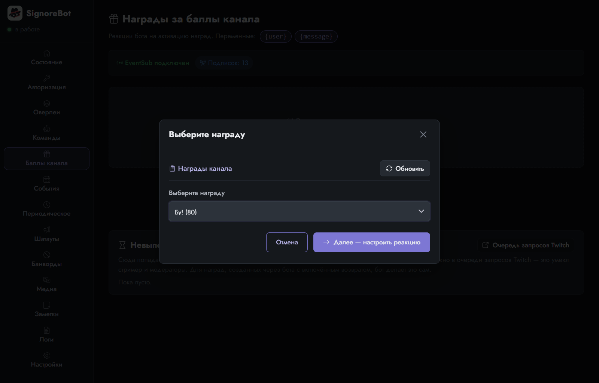
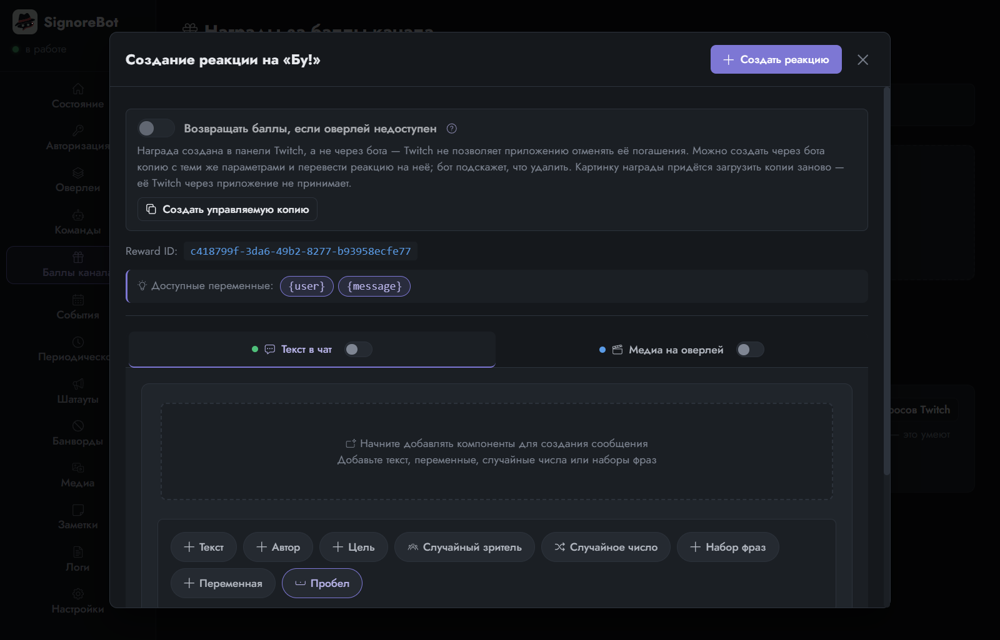
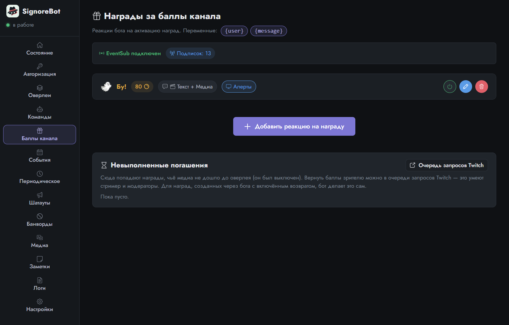
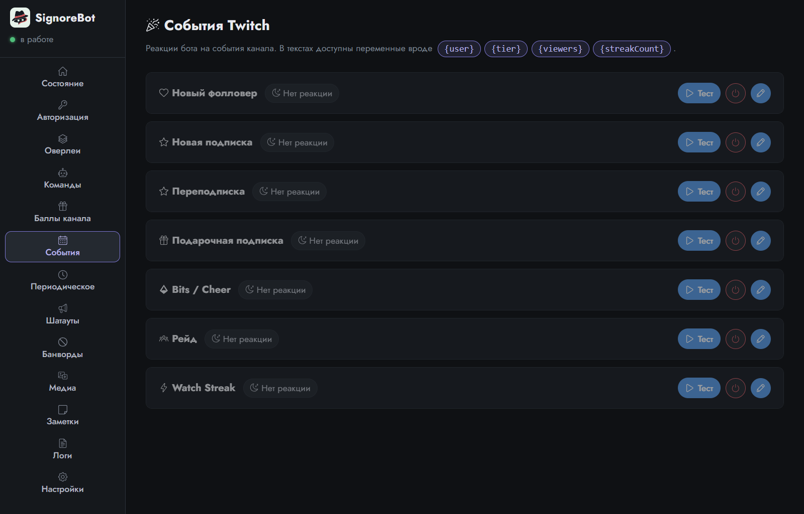
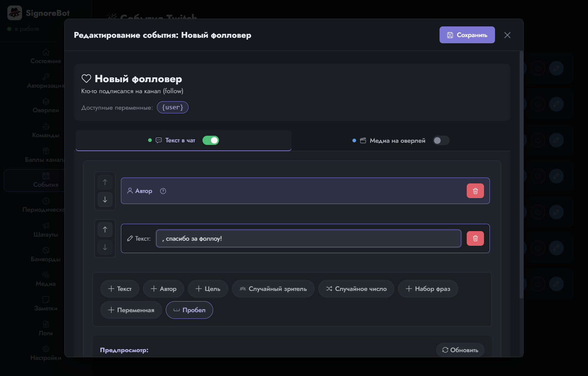
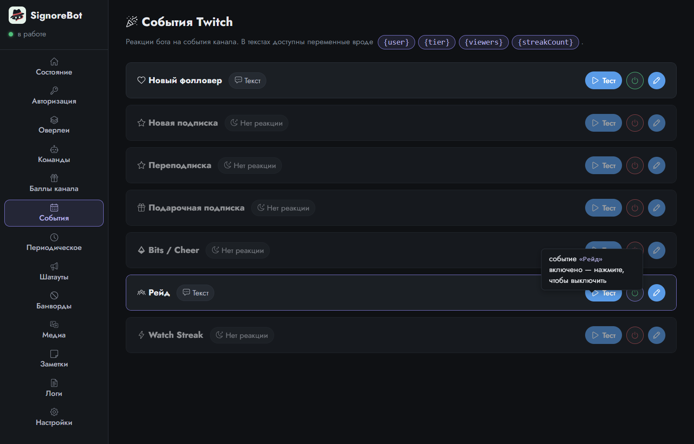

Урок 5 из 9
Награды за баллы и события
Команда — не единственный повод для реакции. Зритель может потратить баллы канала на награду, зафолловить, подписаться, зайти рейдом. Реакции на всё это настраиваются в том же редакторе, что и команды. Урок спокойный: смотрим, что совпадает, а что отличается.
Награда за баллы канала
Баллы канала зрители копят просто за просмотр, а тратят на награды — их вы заводите в панели Twitch: название, цена, нужно ли вписать текст. Twitch сам списывает баллы и присылает боту сообщение «такой-то активировал такую-то награду». Дальше — реакция.
Вкладка Баллы канала → Добавить реакцию на награду. Первым делом бот показывает список наград вашего канала: он получает его с Twitch, поэтому заводить награду нужно именно там, а здесь только выбрать. Для урока на канале есть награда «Бу!».

Дальше открывается редактор. Присмотритесь: это тот же редактор, что у команды. Те же две вкладки, те же тумблеры, тот же конструктор текста и тот же выбор медиа. Отличий два. Здесь нет названия и прав: их задаёт сама награда на Twitch. И набор переменных другой: {user} и {message}, где {message} — текст, который зритель вписал при активации.

Соберите текст: блок Автор и следом «пугает чат!». На вкладке медиа выберите тот же призрак со звуком и оверлей «Алерты»: кнопка Из папки покажет файлы, которые бот уже скопировал к себе. Сохраните. Готово: когда кто-то потратит баллы на «Бу!», в чат придёт фраза, а на стриме появится призрак.

Проверить награду «по-настоящему» можно только чужим аккаунтом: стример не тратит баллы на своём канале. Зато всю реакцию можно проверить кнопкой «Тест» в шапке редактора: текст уйдёт в чат от имени бота, медиа — на оверлей.
События
Событие — то, что случается на канале без чьей-либо команды: новый фолловер, подписка, продление подписки, подарочная подписка, bits, рейд, серия просмотров (watch streak). Список фиксированный, его задаёт Twitch, поэтому на вкладке События ничего не создаётся — карточки уже на месте, все выключены.

Нажмите карандаш у карточки Новый фолловер. И снова тот же редактор, но обратите внимание на строку «Доступные переменные» вверху: у каждого события они свои. У фолловера только {user}, у рейда ещё {viewers}, у переподписки — {months} и {tier}. Так бот сообщает, что именно он знает о событии. Как эти имена в фигурных скобках попадают в текст, показывает урок «Переменные».

Соберите приветствие, включите событие кнопкой питания на карточке и нажмите Тест: бот выполнит реакцию так, будто на канал пришёл TestUser. Так события и проверяют, не дожидаясь настоящего фолловера: кнопка есть у каждой карточки.

Одинаково и по-разному
| Команда | Награда | Событие | |
|---|---|---|---|
| Кто заводит повод | вы, в SignoreBot | вы, в панели Twitch | Twitch, список фиксированный |
| Что срабатывает | сообщение с ! в чате | трата баллов зрителем | фолловер, подписка, рейд… |
| Редактор реакции | один и тот же: текст в чат и/или медиа на оверлей | ||
| Своё у повода | права, кулдаун, алиасы | текст зрителя в {message} | набор переменных под событие |
| Как проверить | написать в чат | «Тест» в шапке редактора | «Тест» на карточке или в шапке редактора |
Остался последний повод, у которого нет автора: время. Его бот отмеряет сам.